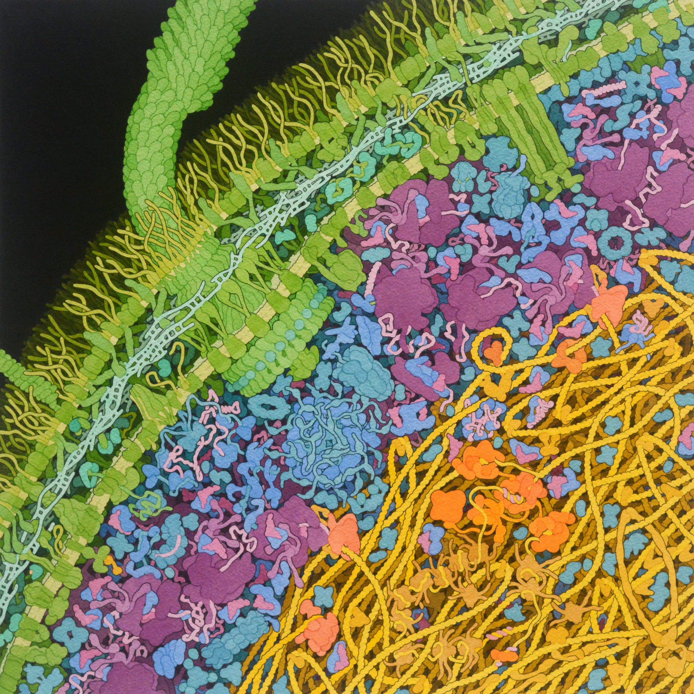

Words are the best medium for conveying complex ideas. Always bet on text!
But there are cases, especially in science, where words alone may prove inadequate; where an idea has too many moving parts, or is so strange, that language alone would flatten the nuance or wonder it deserves.
This is especially true in biology, a field that (perhaps owing to its complexity or breadth) is often taught as a boring list of facts. "I should have loved biology," writes James Somers, a contributor to The New Yorker, "but I found it to be a lifeless recitation of names…the Golgi apparatus and the Krebs cycle; mitosis, meiosis; DNA, RNA, mRNA, tRNA.”
This mirrors my own experience, too. “DNA replication has an error rate of less than one mistake per billion nucleotides” is a fine sentence. But is it clear what that really means? It’s difficult to grasp how mind-numbingly accurate that is without watching DNA replication happen. Words convey a truth, but not a nuanced understanding or sense of awe.
Most visuals in biology are descriptive, rather than explanatory. This is a big problem in textbooks, where students are likely to find a diagram of a mitochondrion next to a paragraph about mitochondria, or photos of DNA replication next to a description of the same. Removing these graphics would have no bearing on the ideas expressed in the text. The visuals are purely ornamental.
There are cases, though, where visuals make biology both more visceral (by turning abstract ideas into deeper “feelings”) and also more legible (expressing shapes, scales, or motions in ways prose cannot). In other words, they do real work. Consider this sentence about the denseness of a living cell, from the textbook Physical Biology of the Cell:
“If we imagine the molecules at a given concentration arranged on a cubic lattice of points, then the mean spacing between those points is given by d = c−1/3, where c is the concentration of interest (measured in units of number of molecules per unit volume).”
This is a (deceptively) beautiful sentence. It explains how tightly packed the molecules in a cell are, based only on their concentration. Glutamate has a concentration of about 100 millimolar, for example. Plug in this number, and you can quickly estimate that glutamate molecules are 2.55 nanometers apart on average; a length smaller than the width of a protein.
Now look at this painting by David Goodsell.

The painting is of an E. coli bacterium. And it gives the reader a way to reason about molecular crowding in a way they couldn’t with the equation alone. Words and equations may express a higher degree of exactitude—they precisely define crowdedness—but the painting gives an intuitive feeling for the same. This “expansion” of understanding, or the fact that the painting does explanatory work for the idea, makes this visual appealing.
Visuals are not only a tool to make biology more exciting and legible. They also benefit the person who makes them. I don’t know David Goodsell personally, but I’d guess he didn’t set out to paint with the goal of becoming famous. He probably did it for himself, as a hobby, to deepen his own understanding of the cell. It just so happened that his paintings also became a great way to pass that understanding on. By accident, his style became the de facto way an entire generation of biologists draws, and reasons about, proteins. Visuals, in other words, are a way to understand, to convey that understanding, and to make an entire category of ideas more legible for thinking. Biology needs much more of this kind of “explanatory visual.” Biology is exceptionally broad, and so there is a lot of room to experiment. Showing a kinesin walk along a microtubule requires visuals that look nothing like enzyme kinetics, which looks nothing like evolution or population dynamics. Every visual in biology is effectively an n-of-1 experiment. Biology also spans orders of magnitude in both time and size; atoms jiggle at the femtosecond timescale whereas evolution plays out over millennia; chemical reactions happen at the angstrom scale whereas ecosystems span continents. No single visual representation can hold all of this scale, and I think that’s what makes visual design so exciting in biology.
Math and physics have a much richer tradition of this kind of work. 3Blue1Brown makes wonderful videos that explain abstract concepts in ways that text or equations alone could not easily match. Biology has a lot to learn from the visuals in other scientific fields.
So I made a list of visuals that fit this mold, meaning they make ideas more legible or exciting, or both. Many of the links are to interactive essays, but some are videos, photographs, paintings, or charts. They span not only biology, but also other sciences.
There are a few related lists on the Internet; see Nicky Case’s explorabl.es, Distill.pub’s list of interactive articles, and these GitHub repos. Other lists tend to focus on mainstream news outlets and don’t typically include biology examples. My goal was to build a list that would help biologists, in particular, see effective visuals in varied formats, so they might be inspired to make their own.
This list is incomplete. If I’ve shared one example from a creator, there’s a good chance they have other excellent examples, too. Think of each link as a doorway, then, instead of a home. Please send suggestions and additions to nsmccarty3@gmail.com.
✦ = Recommended starting point.
Biology
✦ But how did proteins evolve to be so complex? — NanoRooms
✦ Outbreak — Kevin Simler
✦ Fundamental limits on the rate of bacterial growth — Nathan Belliveau
Drew Berry’s animations. See also this good podcast with Drew Berry.
Cell size and scale — University of Utah
Molecular flipbook — Janet Iwasa. See also The Animation Lab.
Simularium — Allen Institute
The anthropocene by the numbers — Chure G. et al.
Snapshot: timescales in cell biology — Shamir M. et al.
Which is bigger, mRNA or the protein it codes for? — David Goodsell
Your operating system: eukaryotic transcription — Clockwork
Eyewire, a game to map the brain
Virus, the beauty of the beast — Hamish Todd
What was the golden age of antibiotics, and how can we spark a new one? — Saloni Dattani. See also The golden age of vaccine development.
The baffling intelligence of a single cell — James Somers & Edwin Morris
Biology is a burrito — Niko McCarty
Bean bag genetics — Kevin R. Thornton
The making of a gene circuit — Niko McCarty & Nehal Udyavar
(A bit of) biological neural networks — part I, spiking neurons — Jack Terwilliger
Tableau Physique — Alexander von Humboldt. Helped establish the field of ecology.
Chromosomes spilling from a lysed cell — Kavenoff & Ryder, 1976. Provides an intuitive sense for how much DNA fits inside a cell, using a single photograph.
DNA, RNA, and proteins all captured in a single photograph — Miller & Beatty, 1969
Other Science
✦ Up and down the ladder of abstraction — Bret Victor There are many papers that lay out the theory for visuals that elevate thought, and that I didn’t include in the list itself. See, for example, Edward Segel and Jeffrey Heer’s “Narrative visualizations: telling stories with data”, Andy Matuschak and Michael Nielsen’s “How can we develop transformative tools for thought?”, and Bret Victor’s “Explorable Explanations”.
✦ Visualizing algorithms — Mike Bostock
✦ Crafting interpreters — Robert Nystrom
✦ Unraveling the JPEG — Parametric Press
✦ Mechanical watch — Bartosz Ciechanowski
✦ Why slicing a cone gives an ellipse — 3Blue1Brown
Going critical — Kevin Simler
Seeing Earth from outer space — Matthew Conlen, Pudding.cool
Cameras and lenses — Bartosz Ciechanowski
Internal combustion engine — Bartosz Ciechanowski
Explained visually — setosa.io
Attention and Augmented Recurrent Neural Networks — Chris Olah and Shan Carter
A visual exploration of Gaussian processes — Distill.pub
Why momentum really works — Distill.pub
Marvin Minsky and the ultimate TinkerToy — Alan Kay
A slower speed of light — MIT Game Lab
Coeffects: context-aware programming languages — Tomas Petricek
Climate spirals — Ed Hawkins
Let’s learn about waveforms — Pudding.cool
Exploring emergence — Mitchel Resnick & Brian Silverman
Entropy explained, with sheep — Aatish Bhatia
Seeing circles, sines, and signals — Jack Schaedler
But what is a neural network? Deep learning chapter 1 — 3Blue1Brown
The sky as a canvas: the artistry and science of drone shows — South China Morning Post
Parable of the polygons — Vi Hart & Nicky Case
Fish eyes for text — Amelia Wattenberger
A 3-D view of a chart that predicts the economic future: the yield curve — NY Times
The Uber game — Financial Times